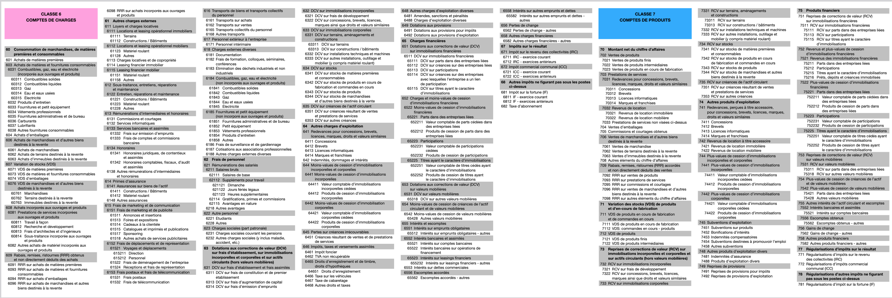

Table des matières
- Le Bilan
- Le Grand-Livre
- Les comptes de charges et de produits
- Le Journal
- La balance de vérification par sommes et par soldes
- La facture
- La taxe sur la valeur ajoutée
- Les réductions de prix
Le plan comptable normalisé luxembourgeois
Version abrégée 2022
Les comptes de gestion

Les comptes de charges et de produits
Text ici
La balance de vérifcation
Text ici
La taxe sur la valeur ajoutée
Text ici
Les réductions de prix
Text ici